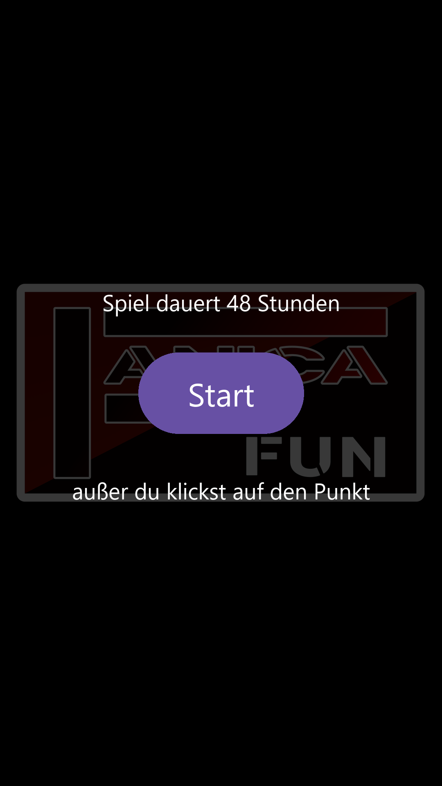
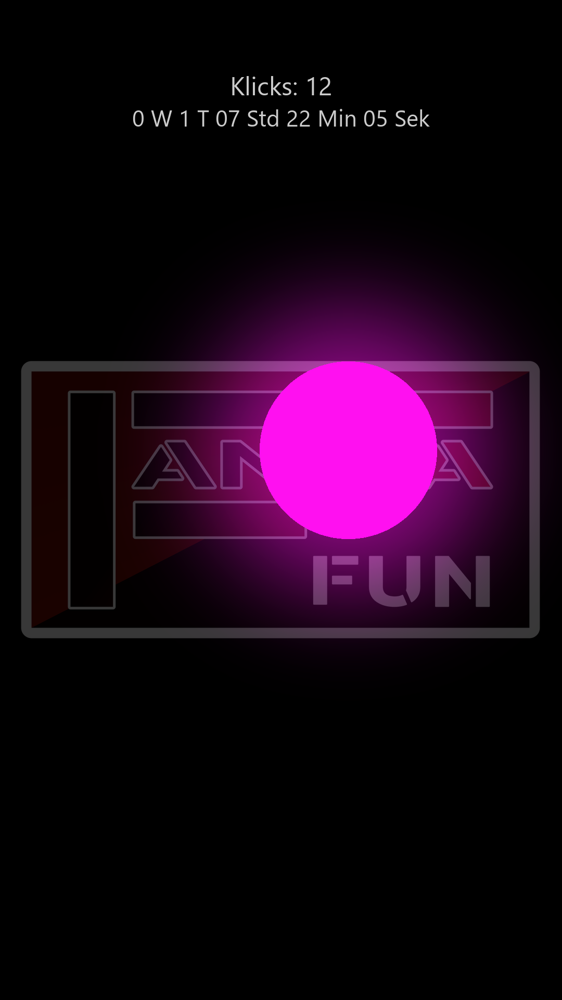
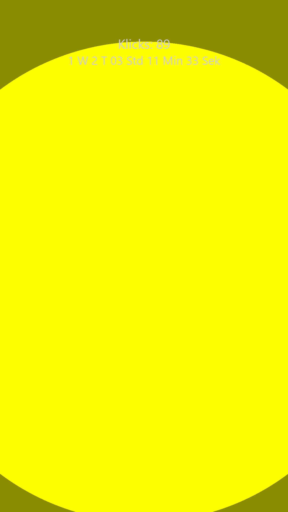

48 Stunden. Ein Punkt.
Aufhalten kannst du ihn nie.
Der Punkt hier wächst wirklich — tipp ihn an.
Ein kleiner Neon-Punkt erscheint irgendwo auf deinem schwarzen Bildschirm. Ab jetzt wächst er. Immer.
Er beginnt klein von vorn — in der nächsten von 16 Neonfarben, an neuer Stelle. Deine Klicks und deine Zeit zählen oben mit.
Lässt du ihn 48 Stunden in Ruhe, füllt er den ganzen Bildschirm. Ein letzter Tipp — und alles beginnt von vorn.
Grün, Pink, Cyan, Gelb, Orange, Lila, Rot, Blau … jeder Tipp wechselt zur nächsten Farbe.
Tipp auf „Klicks": Top 5 Spiele nach Klicks, Top 5 schnellste Sitzungen (Klicks pro Zeit) und dein Klick-Durchschnitt. Alles bleibt nur auf deinem Gerät.
Der Punkt wächst direkt auf deinem Startbildschirm weiter — und bleibt dort antippbar.
App zu? Handy aus? Egal. Der Punkt wächst nach der Uhr — beim nächsten Öffnen ist er exakt so groß, wie er sein muss.
Keine Werbung, keine Berechtigungen, kein Internet, kein Konto, keine Datenerhebung. Die App kann fast nichts — genau das ist der Punkt.
Einmal zahlen, für immer spielen. Und bis zum 1.10.2026 gibt's Premium sogar geschenkt.



Der Punkt füllt den kompletten Bildschirm und berührt alle Ränder. Ein letzter Tipp beendet das Spiel, das Ergebnis wandert in deine Bestenliste — und es geht von vorn los.
Nein. Alles bleibt ausschließlich auf deinem Gerät. Es gibt keinen Server, kein Konto und keine Datenübertragung — jeder Spieler hat nur seine eigene Liste.
Ja. Die Größe wird aus der echten Uhrzeit berechnet. Ob die App offen ist oder nicht, spielt keine Rolle — die 48 Stunden laufen immer.
Bis zum 1. Oktober 2026: nichts — wer bis dahin dabei ist, bekommt Premium für immer geschenkt. Danach kostet die Vollversion für neue Spieler einmalig 1,99 €. Kein Abo.
Ja — NeonPunkt läuft direkt im Browser, auf jedem Gerät. Gleiche Regeln, gleicher Punkt.